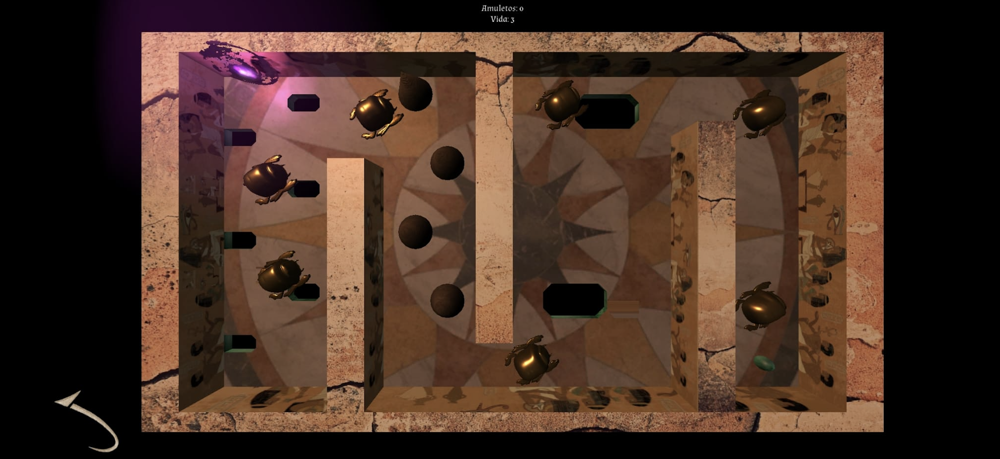

SENET
THE AR & VR GAME

Senet was the most popular and important board game in ancient Egypt. The oldest known reference to the game is painted in 2650 BC. C. We wanted to rebuild the wonders of ancient Egypt and combine them with modern technology. In this SENET game you will find a box-board, the dice and some physical pieces with which you can play at home as the ancient Egyptians did. But there is also an app to play that includes virtual device, a mobile tilt minigame, augmented reality, and a virtual reality presentation.

Here, some screenshots from the interface and the scenario part of the mobile tilt minigame that includes a player, kill zones, rewards and portals to the next levels that you will have to go through in a setting set in the intricacies of ancient Egypt.
Immerse yourself in ancient Egypt with the augmented reality version. Below, you can watch a video of that world.
1. Physical board: We have created a physical board so that the user can interact with the game in a way similar to the original. Its spaces and game rules also follow the original version.
2. Unity App: It allows us to access the virtual part of the game. In it, you can roll the dice virtually and play its mini-game. It has a simple and intuitive design, set in ancient Egypt.
3.Minigame: You will need to tilt your phone to make the ball move across the board until it reaches the portal that takes you to the next level.
4.Virtual or augmented reality:
If you scan Osiris on the back of the board, you will see the world of SENET. If you have VR glasses, you can immerse yourself in it and walk through its spaces!
This site was created by Mari
 Back
Back